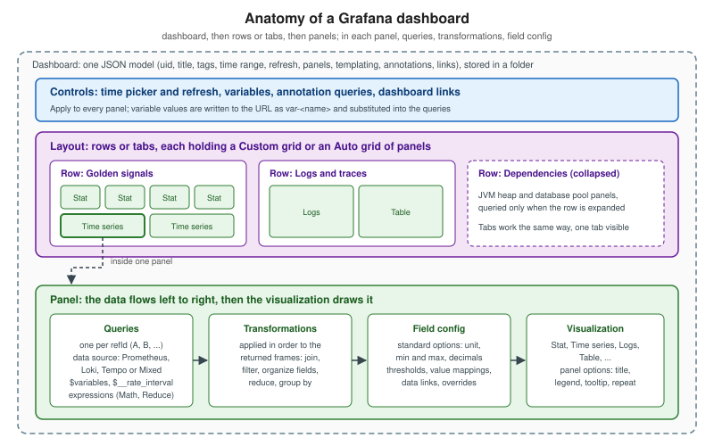

Grafana: Building Dashboards
|
This content was generated with the assistance of AI and should be verified against the official documentation before being relied on in production. |
Checked on 2026-11-09 against Grafana 13.3.x. Tested with Grafana Enterprise 13.3.0 in the hands-on lab: the lab’s dashboard JSON loads from file provisioning, and the PromQL and LogQL expressions of this page ran against the lab’s Prometheus and Loki.
To do this by hand, follow Create a Dashboard and the First Panel and Rows, Tabs, Layouts, Annotations and Links.
A dashboard is the standing answer to "is the service healthy?". Building one in Grafana 13 is quick; building one that a tired person can read at 2 AM is a design problem, treated in Dashboard Design Principles, and the choice of chart in Choosing a Visualization. This page is the mechanics: how the editor works in Grafana 13.3, how panels are arranged, how time is controlled, where dashboards live, and the step-by-step build of the Bookshelf "Bookshelf service health" dashboard that the lab and the alerting pages refer to. Variables, annotations, links, library panels and the JSON model have their own pages: Variables, Annotations and Links and Library Panels, JSON Model and Versions.

Creating a dashboard
From Dashboards select New and then New dashboard, and choose + Add visualization (or describe the dashboard to Grafana Assistant where it is available). A new panel then asks for what it should be built from: Configure visualization, Use saved query (Enterprise and Cloud) or Use library panel. The flow for a panel:
-
Select the data source on the Queries tab, write or build the query and select Refresh.
-
Pick a suggested visualization or open All visualizations.
-
Set the options, a panel title and a description (the description is the tooltip that explains what the panel measures, which is the single cheapest improvement to any dashboard).
-
Select Save, give the dashboard a title and description, choose a folder and save; then Back and Exit edit.
Every panel needs at least one query. To start an existing dashboard changing, select Edit; saving takes an optional change description (it is shown in the version history, so write one) and Save as copy under the save button duplicates a dashboard with a new name, folder and an option to copy the tags.
Source: Grafana: Create dashboards.
Edit mode, the sidebar and the content outline
In edit mode the toolbar offers Add new element (panels, dashboard controls, groupings), Dashboard options, Edit as code, Export, Content outline, Filters overview, Dashboard insights, Feedback and Hide or Dock/Undock for the sidebar. The sidebar shows the options of whatever is selected (the dashboard, a grouping or a panel); it is docked in edit mode and undocked in view mode, and the choice is remembered in the browser. Hovering over a panel opens its actions: Settings, Edit visualization, Copy, Duplicate and Delete; dragging the lower right corner resizes it in the Custom layout.
Add new element is also how you add the dashboard controls: Filter and Group by, Variable, Annotation query and Link. Variables and annotation queries used to live in the dashboard settings; they are managed from the sidebar now, so older tutorials pointing at Settings > Variables describe a removed place.
The Content outline shows a tree of panels, rows, tabs and (in edit mode) variables; search by name and select an item to jump to it. On a dashboard with forty panels this is the navigation that makes editing bearable, and the reason panel titles should be unique and meaningful.
Edit as code opens the dashboard definition as JSON for direct editing, which is the fast path for mass changes (replace a data source UID, rename a label in thirty queries) and the bridge to dashboards-as-code; the format is described in Library Panels, JSON Model and Versions and the Git-based workflows in Observability as Code. Since Grafana 13.0, dynamic dashboards are generally available and on by default; the option to disable them was removed, and existing dashboards migrate to the new schema when they are opened.
Source: Grafana: Create dashboards, edit mode and sidebar and the What’s new pages of Grafana 13.0 (dynamic dashboards).
Layouts: Custom and Auto grid
Two layouts arrange the panels of a dashboard, row, or tab; the layout is changed under Layout in the Dashboard options sidebar (or on the selected grouping).
| Layout | Behaviour | Use it when |
|---|---|---|
Custom (default for new dashboards) |
Free position and size; drag to move and resize. Show/hide rules are not supported. |
The arrangement carries meaning: a Stat row above a wide time series, a table beside a graph. |
Auto grid |
Panels fit a uniform grid and cannot be resized by hand. Settings: Min column width, Max columns (up to 10), Row height, Fill screen. Supports show/hide rules. Resizing a panel prompts to edit the auto layout or to switch to Custom. |
Many similar panels, repeated panels, wall displays on different screen sizes, and any panel that should appear conditionally. |
Source: Grafana: Create dashboards, layouts.
Rows and tabs
A grouping is a row or a tab that holds panels or further groupings. Dashboards nest: rows inside a row, rows inside a tab, or tabs inside a row, with at most four grouping levels; a tab cannot sit directly inside another tab (put a row in between). To group the panels of a dashboard, use Add new element and Group into rows or Group into tabs, or select panels with Shift held and choose Group into row or Group into tab in the sidebar; Ungroup rows and Ungroup tabs undo it (deleting a grouping deletes its panels, ungrouping does not).
Grouping options: Title, Fill screen (rows), Hide row header (rows: panels then look ungrouped in view mode, and a row with a hidden header cannot be collapsed), Filters and Variables that apply only to the panels inside the grouping (panels look there first and fall back to the dashboard-level ones; the time range stays shared), Layout, Repeat options and Show / hide rules.
Design advice that follows from the mechanics: use rows for the vertical hierarchy of an overview (golden signals first, the details collapsed below) and tabs when the audiences differ (on-call versus capacity), never both for the same split. A collapsed row of dependency panels keeps the first screen readable and costs nothing until opened.
Source: Grafana: Dashboard panel groupings.
Show/hide rules (conditional rendering)
Show / hide rules decide whether a panel is displayed. They work only in the Auto grid layout (set it on the dashboard, row or tab). Choose Show or Hide, then + Add rule of one of three types:
-
Query result: Has data or No data of the panel’s own query. A "No data" rule is a way to find panels with broken queries, and a "Has data" rule keeps an error-log panel invisible until an error occurs.
-
Template variable: compares a variable with a value using Equals, Not equals, Matches or Not matches (regular expressions).
-
Time range less than: hides or shows the panel when the dashboard range is shorter than a duration between 5 minutes and 5 years, for example a weekly trend panel that is meaningless on a one-hour range.
With several rules, Match all is AND and Match any is OR. Hidden panels do not appear in view mode; in edit mode they show an icon or overlay so that they can still be found. The risk is the same as any conditional: a panel that vanishes when its query fails looks the same as a healthy system, so never use a "Has data" rule on the panel that tells you the service is down.
Repeating panels, rows and tabs
Repeat options > Repeat by variable makes Grafana create one copy per value of a multi-value variable: a panel per instance, a row per service. Requirements and limits of panels:
-
The query must use a multi-value variable (see Variables).
-
In a Custom layout choose the direction: Horizontal (copies side by side, widths adjusted; no other panel may share the row) with Max per row, or Vertical (stacked, each keeping the original width).
-
Copies cannot be edited; only the source panel is, and its changes apply to all copies. Manual layout changes to copies are not persisted, because they are regenerated from the source on every load. Put the variable name in the title so each copy says what it shows. Save, exit edit mode and reload the dashboard to see changes applied to all copies.
-
Disable repeating in the Repeat by variable list stops it.
Repeating rows and tabs use the same Repeat by variable option in the grouping settings. Mind the cost: a repeat over thirty instances is thirty panels and thirty queries per refresh.
Source: Grafana: Configure repeating panels and the repeat options of the groupings page above.
Dashboard settings
Dashboard options (or the shortcut d s) holds the settings that change how every panel behaves:
-
Time zone: Default (the user’s profile, team or organization setting, falling back to the browser), Browser time, or an ISO 8601 zone such as UTC. For an on-call dashboard shared between sites choose UTC explicitly, so that an alert timestamp in the chat and the graph agree.
-
Auto refresh: the list of refresh intervals offered in the picker. Refresh live dashboards keeps panels whose range includes now updating continuously. Keep refresh rates no faster than the scrape interval of the data: refreshing every 5 seconds a metric that changes every 15 seconds only costs queries.
-
Now delay: offsets
nowto account for data aggregation delays, so the last point is not a half-filled bucket that dips and confuses people. -
Week start and Hide time picker.
-
Graph tooltip: Default (no sharing), Shared crosshair or Shared tooltip. Shared crosshair is what lets you hover one graph and see the same instant on all others, the basic tool of correlating latency, errors and saturation.
-
Tags: up to 50 characters each; an existing tag must be spelled exactly or a new one is created, which is how "bookshelf" and "Bookshelf" become two tags.
-
Links and JSON Model (see the pages for those). Variables and annotations are managed from the sidebar as described above.
Source: Grafana: Modify dashboard settings.
Using a dashboard: time, zoom, refresh and kiosk
-
The time picker shows the active range; click it for relative (last 15 minutes) or absolute ranges, hover for the exact timestamps, and use Change time settings for time zone and fiscal year.
-
Zoom in by dragging across a time series panel (there are keyboard shortcuts as well; press
?for the list), zoom out with the icon, a double click, or the keyboard; copy a range and paste it in Explore or another dashboard with the time range shortcuts. All panels of the dashboard follow the dashboard range unless a panel overrides it (see Queries, Explore and Drilldown). -
Refresh reruns all queries and cancels pending requests; auto refresh is off by default, with an Auto option that picks an interval from the time range and window width.
-
Kiosk mode hides the main menu and the top navigation for a wall display; it is started from the user menu (or
d k) and left with Esc. -
The URL carries the state:
fromandto(epoch milliseconds or relative values such asnow-5m),timewithtime.windowto centre a range on a timestamp,timezone(such asEurope/Madrid), andvar-parameters for variables. A link pasted in an alert annotation or a chat message should carry them, so the reader lands on the same moment. -
Useful keyboard shortcuts: Ctrl+S to save,
ffor dashboard search, Ctrl+K for the command palette,d eto expand rows, and while hovering a paneleto edit andvfor the full screen view; press?for the full list.
Source: Grafana: Use dashboards.
Folders, permissions, search and deleted dashboards
Dashboards live in folders, and the folder is where permissions are set: a dashboard inherits those of its folder, assignable to organization roles, teams and users (Folder actions > Manage permissions). Folders nest up to four levels; creating one inside another needs Edit or Admin on the parent. Names cannot contain underscores or percent signs, which interfere with search, and alerts cannot be put in a folder whose name contains a slash (alert rules are stored in folders too, see Users, Teams and Permissions). The Dashboards page also shows Shared with me and, for members of teams that own folders, My team folders.
A layout that scales: one folder per team or service, a convention for names ("Service: Bookshelf - health", "Service: Bookshelf -
JVM"), tags for cross-cutting classes (golden-signals, slo), and a short "overview" dashboard per service linking to the
detail dashboards (see Annotations and Links).
Search finds dashboards by title, tag and folder; f opens it from anywhere and the command palette (Ctrl+K) reaches it too.
Deleting a dashboard moves it to Dashboards > Recently deleted, where it is kept for up to 12 months. Users can restore the dashboards they deleted, administrators any; restore asks for a target folder. Restored dashboards do not get their dashboard-specific permissions back (they inherit those of the target folder) and the version history starts again at version 1. Deleting a folder is immediate and cannot be undone. As-code dashboards (see Observability as Code) make all of this less important, since Git is the history.
Source: Grafana: Manage dashboards (browse, folders, permissions, restore deleted dashboards).
Build the Bookshelf service health dashboard
The target is the overview level of the hierarchy in
Dashboard Design Principles: the first screen answers "is it
healthy?", detail sits underneath. The lab’s Prometheus data source has the UID prometheus
(see Data Sources); the load generator produces the traffic.
-
Create the dashboard, name it "Bookshelf service health", save it in a folder "Bookshelf" and give it the tags
bookshelfandgolden-signals. In Dashboard options set the time zone to UTC, Graph tooltip to Shared crosshair, the default range to the last 6 hours and add a 30s refresh option. -
Group into rows: "Golden signals", "Logs and traces", "Dependencies" (collapse the last one).
-
Row "Golden signals", top line of Stat panels (the Stat reduces each series to one value with the chosen calculation type, see Transformations and Expressions):
-
Requests per second:
sum(rate(http_server_requests_seconds_count{application="bookshelf"}[$__rate_interval])). -
5xx ratio, unit Percent (0.0-1.0), thresholds green below 0.05 and red from 0.05 (the alert threshold of the lab):
sum(rate(http_server_requests_seconds_count{application="bookshelf",status=~"5.."}[$__rate_interval])) / sum(rate(http_server_requests_seconds_count{application="bookshelf"}[$__rate_interval])). -
p95 latency, unit seconds, threshold at the SLO:
histogram_quantile(0.95, sum by (le) (rate(http_server_requests_seconds_bucket{application="bookshelf"}[$__rate_interval]))). -
Instances up:
count(up{job="bookshelf"} == 1), with value mapping 0 shown as "DOWN".
-
-
Row "Golden signals", Time series: requests per second by
statusand the p95 per route (the same queries withsum by (status)orsum by (le, uri)), with the SLO as a threshold line (Show thresholds as a dashed line). Give each panel a description. -
Row "Logs and traces": a Logs panel on Loki with the error lines of the service, and a Traces or Table panel from Tempo; use the Auto grid layout in this row so that the Logs panel can be given a "Has data" rule, since an empty error log needs no space.
-
Row "Dependencies": JVM heap and the database connection pool utilisation (the Micrometer metrics are described in Spring Boot Metrics and Observability).
-
Verify: save, exit edit mode, start the load generator and then use the lab’s fault injection to raise the 5xx ratio and watch the red Stat, the shared crosshair on the graphs, and the same query run in Explore with the time range from the dashboard.
Keep the first screen to the four Stat panels and two graphs; everything else is one scroll away.
Things that go wrong
-
The numbers differ between dashboards: a different Max data points, Min interval or Relative time on the panel; see the query options.
-
Panels show no data after moving the dashboard to another Grafana: the data source UID changed; provision data sources with fixed UIDs.
-
A repeated panel cannot be edited or its position resets: it is a generated copy; edit the source panel.
-
The dashboard is slow: too many panels, too many repeats, an unbounded range on a high-cardinality query; open the query inspector Stats of the slow panel and hide panels one by one.
-
Restoring brought the dashboard back without its permissions: re-grant them; they were dashboard-specific.
In the books
Salituro (Learn Grafana 10.x) and McCollam (Getting Started with Grafana) teach dashboard building on the Grafana 10 and earlier editor: add
a panel with the Graph or Singlestat panels (since replaced by Time series and Stat), arrange it by dragging, and
manage rows with the add-row button, with variables and settings in the settings page. The design reasoning in their chapters (audience
first, overview to detail, information density, consistent units) still holds and is used in
Dashboard Design Principles. What changed: the edit mode with
sidebar, outline and Edit as code, Auto grid and conditional rendering, tabs and nested groupings, variables and annotations
moved out of the settings, and dashboards stored as resources (/apis) with the dynamic dashboards schema.